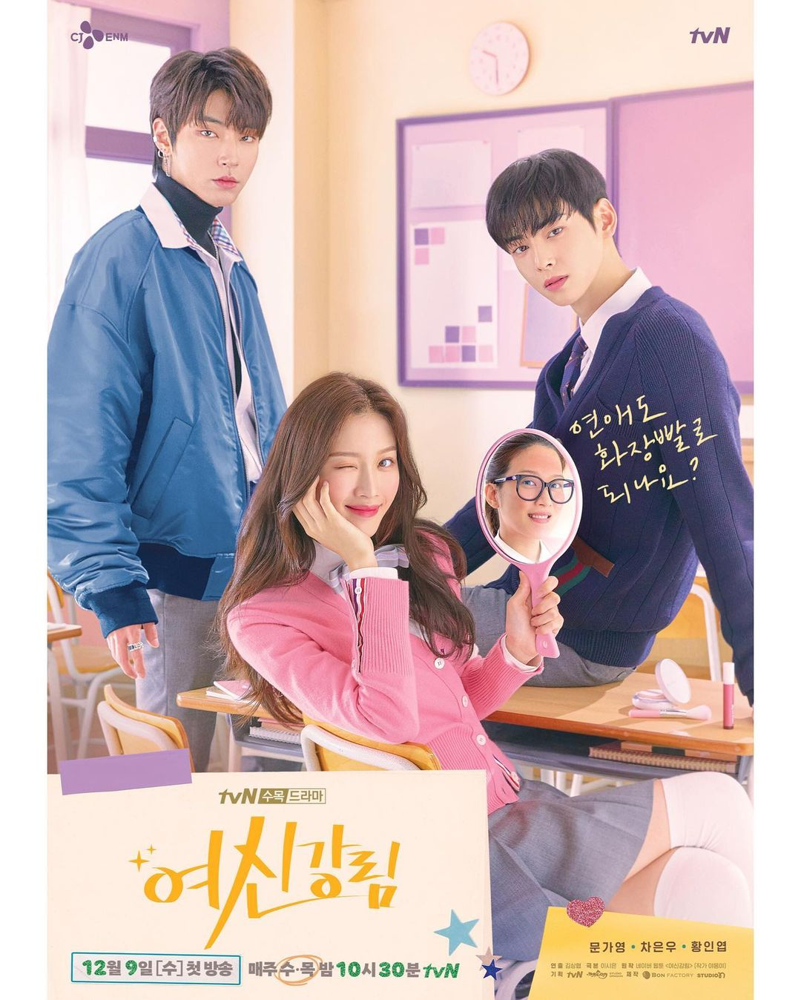
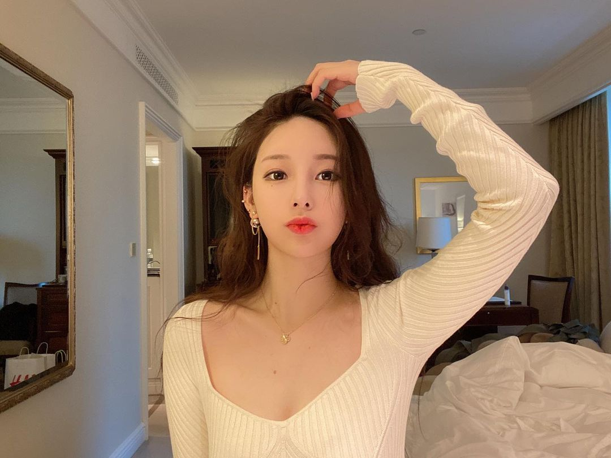
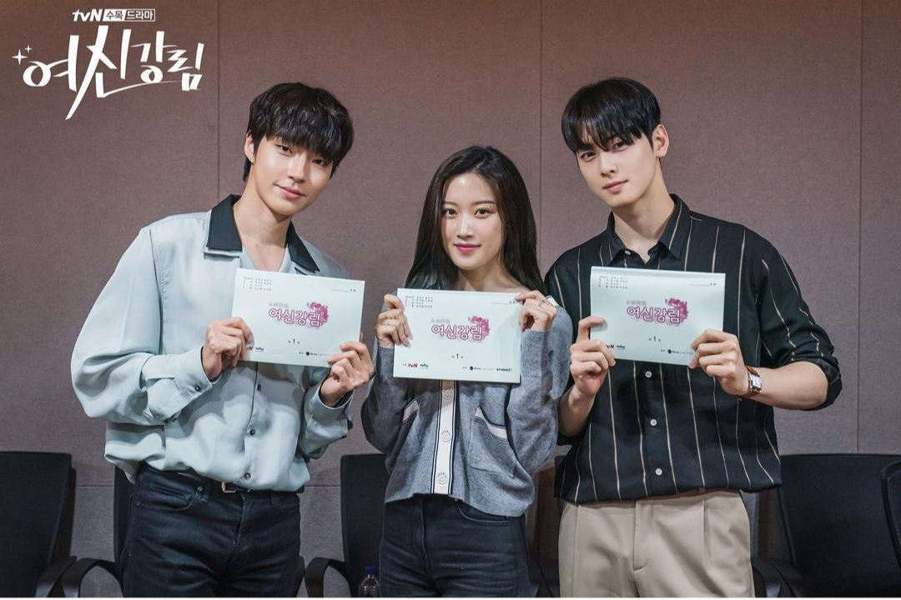
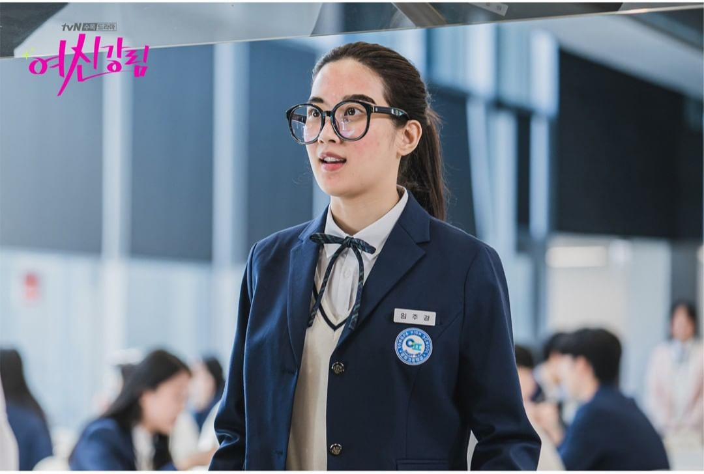

5 Fakta Menarik soal Drama Korea True Beauty yang Perlu Kamu Tahu
Konten ini diproduksi oleh kumparan K-Pop
16 November 2020 13:18
Banyak fans yang sudah enggak sabar menantikan drama Korea terbaru, True Beauty. Apalagi di sini, Cha Eun Woo, Moon Ga Young, dan Hwang In Yeop bakal terlibat cinta segitiga. Wah, siap-siap baper, nih!
Drama ini baru akan tayang pada 9 Desember 2020. Nah, sebelum nonton, simak dulu lima fakta menarik True Beauty berikut ini. Cowok kelahiran 1991 ini menyelesaikan kewajibannya usai bertugas sebagai tentara korps marinir sejak April 2019.
Adaptasi Webtoon

True Beauty adalah adaptasi webtoon populer karya Yaongyi yang dirilis pada 2018. Webtoon ini telah dibaca lebih dari 4 miliar kali, dan sempat viral di mancanegara seperti Amerika Serikat, Jepang, Prancis, Indonesia, termasuk Korea.
Kisahnya tentang Lim Ju Gyeong, cewek remaja yang enggak percaya diri sama penampilanya. Untuk menutupinya, dia berusaha tampil cantik dengan memakai makeup tebal.
Tapi, rahasia ini terbongkar saat cowok populer di sekolah, yakni Suho dan Seojun, memergokinya tanpa makeup. Tak disangka, justru kedua cowok itu jatuh cinta dengan tampilan asli Lim Ju Gyeong.
Lim Ju Gyeong Mirip dengan Yaongyi

Dalam rangka ulang tahun pertama webtoon True Beauty pada 2019, kartunis Yaongyi mengungkap jati dirinya yang dulu misterius di mata publik. Ternyata, cewek kelahiran 1991 itu punya nama asli Lim Ju Kyung yang mirip dengan nama tokoh buatannya, lho.
Setelah merilis foto-fotonya di Instagam, warganet terkejut karena penulis asal Korea ini sangat mirip dengan Lim Ju Gyeong. Yaongyi mengaku pengalaman pribadinya sering jadi inspirasi untuk webtoon, salah satunya gaya riasan yang dipakai tokoh Lim Ju Gyeong.
Cha Eun Woo Sudah Lama Diprediksi Memerankan Suho

Kepopuleran webtoon True Beauty bikin fans ramai memilih selebriti sampai idola yang cocok jadi Lim Ju Gyeong, Suho, dan Seojun. Cha Eun Woo kerap diminta memerankan Suho, sedangkan Kim Hyun Bin yang diprediksi akan memainkan Seojun.
Seolhyun AOA, Lee Sung Kyung, dan paling sering Jisoo Blackpink, adalah kandidat pemeran Lim Ju Gyeong yang diharapkan fans.
Gara-gara terlalu mirip Suho, Cha Eun Woo langsung dilirik tim produksi dan jadi pemain True Beauty pertama yang dikonfirmasi. Namun tokoh Lim Ju Gyeong jatuh kepada Moon Ga Young, sedangkan Seojun dimainkan oleh Hwang In Yeop.
Transformasi Moon Ga Young Raih Pujian

Teaser True Beauty baru-baru ini sudah menunjukkan bocoran penampilan Moon Ga Young sebagai versi Lim Ju Gyeong yang tanpa makeup. Wajahnya polos, memakai kacamata besar, baju oversized, dan gaya rambut ponytail seperti di webtoon.
Saking miripnya dengan Lim Ju Gyeong, penampilan Moon Ga Young raih banyak pujian dari para fans sampai trending di Twitter. Bahkan, pihak produksi mengaku terkesan sama transformasi Moon Ga Young ini.
"Dia benar-benar berubah menjadi Lim Ju Gyeong dan sangat memperhatikan semua aspek mulai dari mimik, sikap, sampai gaya bicara. Dia juga enggak keberatan untuk mengubah penampilannya agar bisa tampil maksimal," jelas mereka seperti dilansir Soompi
Digarap Sutradara Extraordinary You
True Beauty digarap oleh Kim Sang Hyup, yang turut menyutradarai drama adaptasi webtoon Extraordinary You. Drama Korea ini siap menyapa pemirsa sebentar lagi menggantikan Tale of the Nine Tailed.
Catat jadwalnya, ya. True Beauty tayang mulai 9 Desember 2020 tiap Rabu dan Kamis di tvN.